手搓廣告遊戲選集 · 2.0 (7)
兩款遊戲各 4 張，iPhone 與 iPad 兩個尺寸。這裡是縮圖，原圖在 repo 的 docs/screenshots/v2.0-build7/。
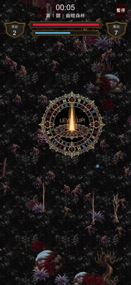
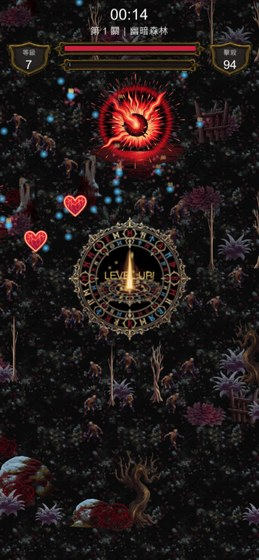
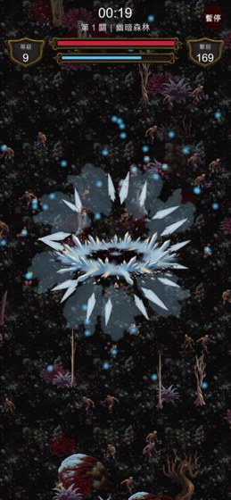
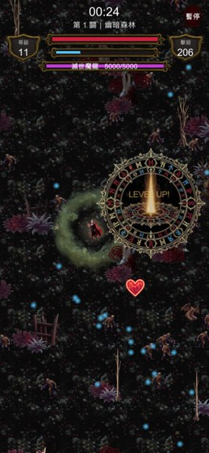
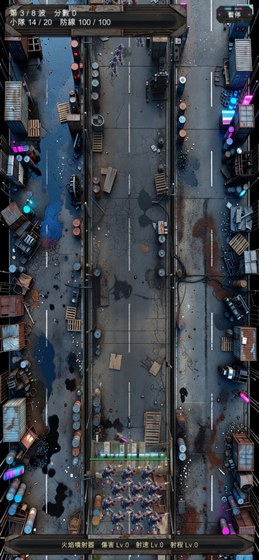
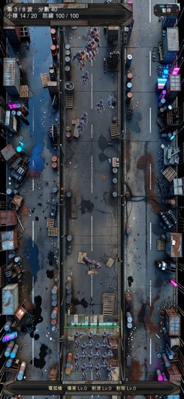
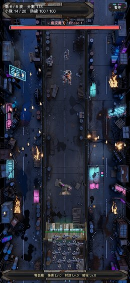
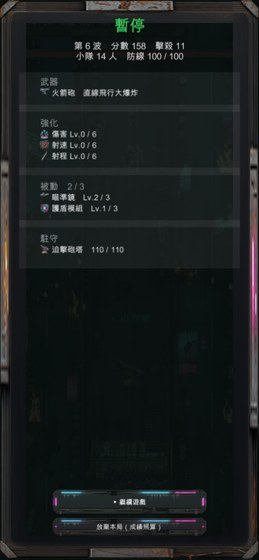
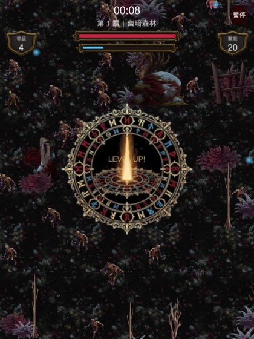
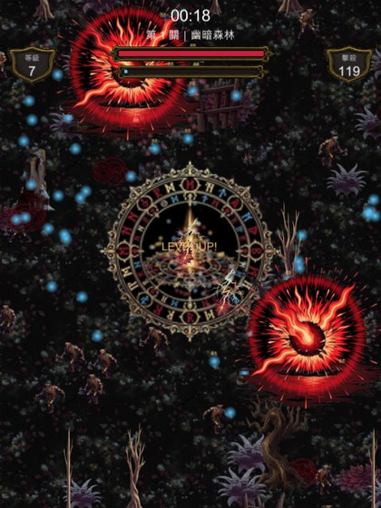
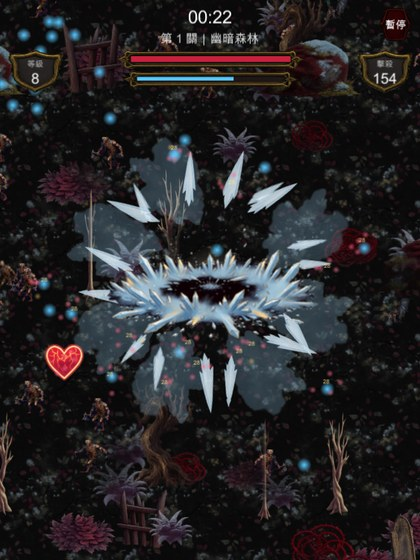
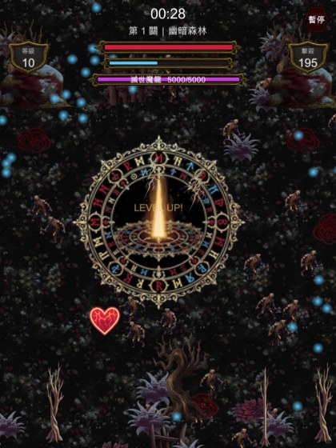
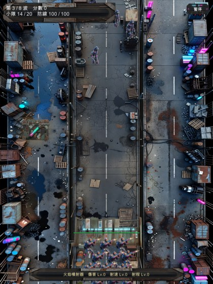
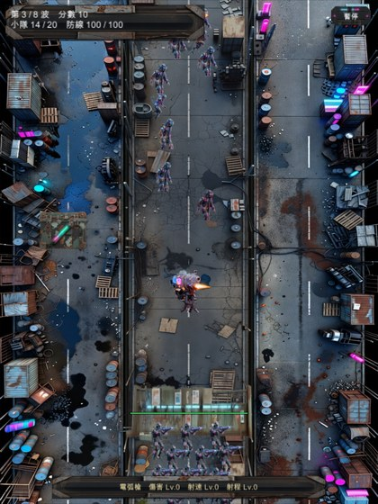
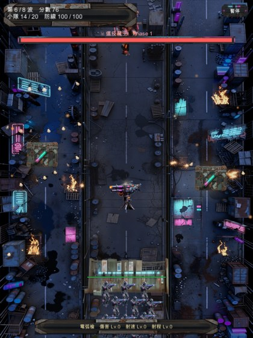
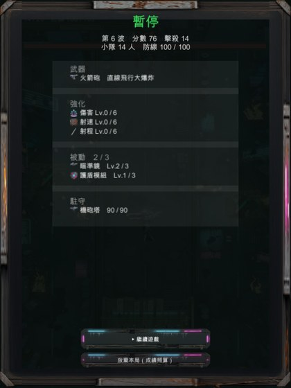
| 項目 | 結果 |
|---|---|
| 尺寸 | 108 張全部相符 iPhone 1284×2778、iPad 2064×2752 |
| Development Build 浮水印 | 無 右下角切出來放大確認過 |
| 開發用診斷數字 | 已關閉 |
| 結算面板遮擋 | 已排除 拍照前先 DebugHide() |
ScreenCapture.CaptureScreenshot(path, 3) 讓 Unity 原生渲染放大，比例完全一致（428:926 = 1284:2778）。iPad 是 516×688 ×4。跑截圖時卡死過一次：配裝面板那張要先開暫停，而暫停會把 timeScale 設成 0，於是所有 WaitForSeconds 永遠等不到。改用 WaitForSecondsRealtime。
commit 036f4e2 · ASC 版本紀錄由使用者自行建立